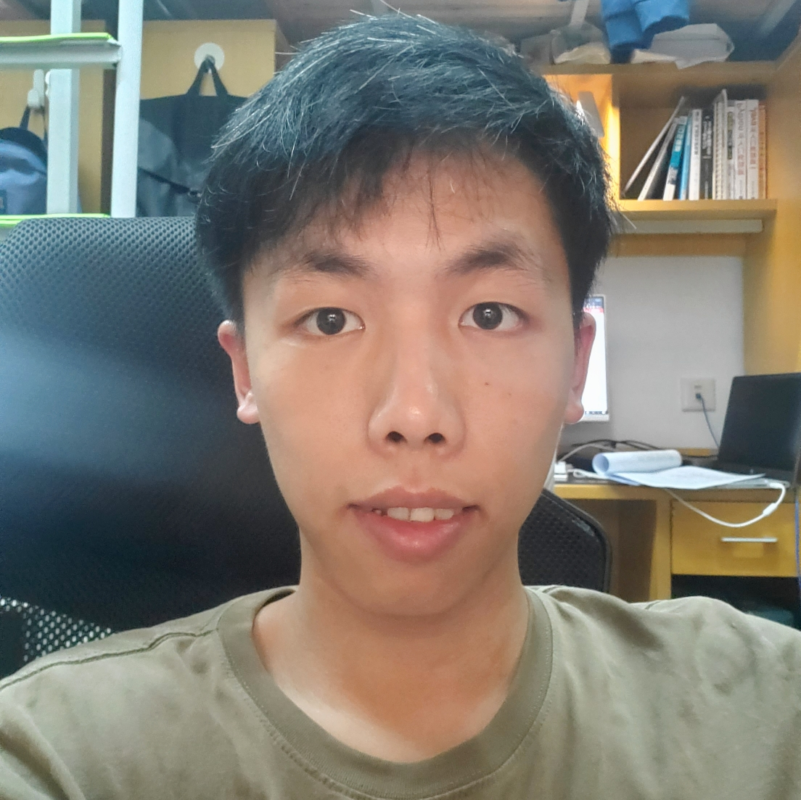

Research Interests
Zi-Yuan Hu (胡梓淵)
huzy33 [at] mail2.sysu.edu.cn
Hi, welcome to my personal website!
I am currently a third-year undergraduate from Sun Yat-sen University (SYSU) majoring in Software Engineering. As a person who is passionate about research, I wish to pursue a PhD degree in the future.
Feel free to communicate with me or take my CV.
Research Interests
- Data Mining, especially Recommender System
- Natural Language Processing, especially Text Classification and Text Matching
- Deep Learning and Knowledge Graph
Research Experience
- Institute of Artificial Intelligence and Unmanned Systems, SYSU
Aug. 2019 – Jan. 2021
Research assistant under the supervision of Prof. Chang-Dong Wang
Publications
* indicates equal contribution
- (Accepted) "A BP Neural Network Based Recommender Framework with Attention Mechanism"
Chang-Dong Wang, Wu-Dong Xi, Ling Huang, Yin-Yu Zheng, Zi-Yuan Hu and Jian-Huang Lai
Accepted by IEEE Transactions on Knowledge and Data Engineering (TKDE, IF=4.935, JCR Q1), in press 2020
[paper]
- (Under Review) "BCFNet: A Balanced Collaborative Filtering Network with Attention Mechanism"
Chang-Dong Wang*, Zi-Yuan Hu*, Jin Huang*, Zhi-Hong Deng*, Ling Huang, JianHuang Lai and Philip S. Yu
Submitted to ACM Transactions on Knowledge Discovery from Data (TKDD, IF=2.01, JCR Q2), 2020
[paper] [code]
Honors and Awards
- National Scholarship (Top 2%), Ministry of Education of China, 2020
- The First Prize Scholarship (Top 5%), SYSU, 2020
- Silver Medal (Top 2%), Kaggle Research Code Competition (MoA), 2020
- Bronze Medal (Top 8%), Kaggle Research Code Competition (Riiid) 2020
- Honorable Mention, Mathematical Contest in Modeling (MCM), 2020
- National Scholarship (Top 2%), Ministry of Education of China, 2019
- The First Prize Scholarship (Top 5%), 2019
- The Third Prize, National Mathematical Contest in Modeling of Guangdong Province, 2019
Extracurricular Activities
- Served as vice-leader of the school community, Student Academic Development Center of SYSU, 2019
- Participated in more than 50 hours of volunteer activities each year in 2018, 2019 and 2020
- Institute of Artificial Intelligence and Unmanned Systems, SYSU
Aug. 2019 – Jan. 2021
Research assistant under the supervision of Prof. Chang-Dong Wang
Publications
* indicates equal contribution- (Accepted) "A BP Neural Network Based Recommender Framework with Attention Mechanism"
Chang-Dong Wang, Wu-Dong Xi, Ling Huang, Yin-Yu Zheng, Zi-Yuan Hu and Jian-Huang Lai
Accepted by IEEE Transactions on Knowledge and Data Engineering (TKDE, IF=4.935, JCR Q1), in press 2020 [paper]
- (Under Review) "BCFNet: A Balanced Collaborative Filtering Network with Attention Mechanism"
Chang-Dong Wang*, Zi-Yuan Hu*, Jin Huang*, Zhi-Hong Deng*, Ling Huang, JianHuang Lai and Philip S. Yu
Submitted to ACM Transactions on Knowledge Discovery from Data (TKDD, IF=2.01, JCR Q2), 2020 [paper] [code]
Honors and Awards
- National Scholarship (Top 2%), Ministry of Education of China, 2020
- The First Prize Scholarship (Top 5%), SYSU, 2020
- Silver Medal (Top 2%), Kaggle Research Code Competition (MoA), 2020
- Bronze Medal (Top 8%), Kaggle Research Code Competition (Riiid) 2020
- Honorable Mention, Mathematical Contest in Modeling (MCM), 2020
- National Scholarship (Top 2%), Ministry of Education of China, 2019
- The First Prize Scholarship (Top 5%), 2019
- The Third Prize, National Mathematical Contest in Modeling of Guangdong Province, 2019
Extracurricular Activities
- Served as vice-leader of the school community, Student Academic Development Center of SYSU, 2019
- Participated in more than 50 hours of volunteer activities each year in 2018, 2019 and 2020
Last update: Feb. 3, 2021. Webpage template borrows from John Hewitt.